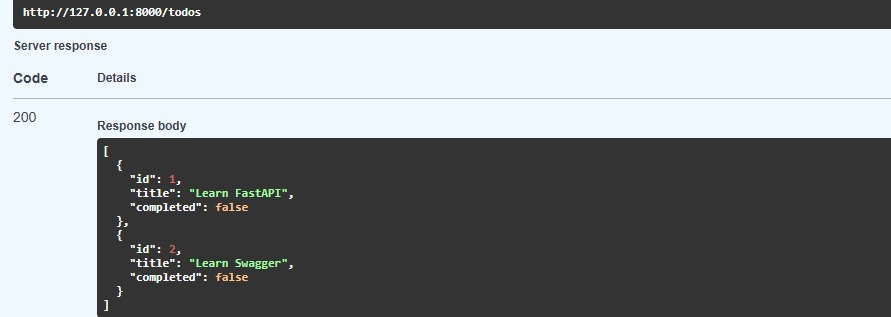
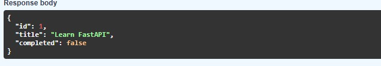
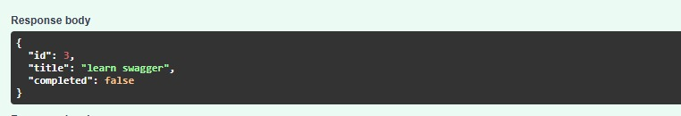
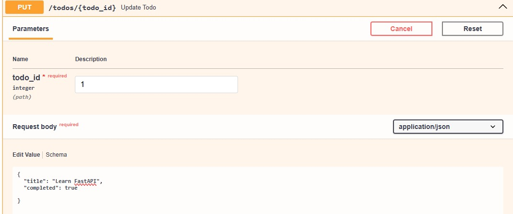
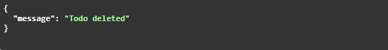

FASTAPI Todo Application
This project demonstrates a basic Todo application using FASTAPI. Each user can Get,Post,update and delete the todo items.
Project & App Setup
Create a FastAPI project and build a To-Do application..
Terminal
Create FastAPI To-Do Project
mkdir Todo_project
cd Todo_project
python -m venv venv
pip install fastapi uvicorn
Create main.py
uvicorn main:app --reload
Open Swagger:
http://127.0.0.1:8000/docs
Todo Model
The To-Do model defines the structure of tasks created and managed through the FastAPI API.
Todo_app/models.py
from fastapi import FastAPI, HTTPException
from pydantic import BaseModel
class Todo(BaseModel):
user_id: int
title: str
completed: bool = False
Steps For Creating FASTAPI TODO List
A simple Todo API is created using FastAPI. Users can create, view, update, and delete Todo items using REST API methods.
GET - View Todo Items
The GET method is used to retrieve Todo items from the API.
main.py
@app.get("/todos")
def get_todos():
return todos
This endpoint returns all Todo items.
Endpoint
GET /todos



POST - Create Todo Item
The POST method is used to create a new Todo item.
main.py
@app.post("/todos")
def create_todo(todo: Todo):
new_todo = {
"id": len(todos) + 1,
"title": todo.title,
"completed": todo.completed
}
todos.append(new_todo)
return new_todo
Request Body
{
"title": "Learn FastAPI",
"completed": false
}
The new Todo item is added to the Todo list.


PUT - Update Todo Item
The PUT method is used to update an existing Todo item.
main.py
@app.put("/todos/{todo_id}")
def update_todo(todo_id: int, todo: Todo):
for item in todos:
if item["id"] == todo_id:
item["title"] = todo.title
item["completed"] = todo.completed
return item
Request
PUT /todos/1
Request Body
{
"title": "Learn FastAPI and Swagger",
"completed": true
}


DELETE - Delete Todo Item
The DELETE method is used to remove a Todo item.
main.py
@app.delete("/todos/{todo_id}")
def delete_todo(todo_id: int):
for todo in todos:
if todo["id"] == todo_id:
todos.remove(todo)
return {"message": "Todo deleted"}
Request
DELETE /todos/1
Response
{
"message": "Todo deleted"
}


Testing API Using Swagger
FastAPI provides automatic interactive API documentation using Swagger UI. It can be used to test GET, POST, PUT, and DELETE operations.
Swagger UI
http://127.0.0.1:8000/docs
Available API Operations
GET /todos → View Todo items
POST /todos → Create Todo item
PUT /todos/{id} → Update Todo item
DELETE /todos/{id} → Delete Todo item
CRUD Operations
The Todo application implements the four basic CRUD operations.
CREATE → POST
READ → GET
UPDATE → PUT
DELETE → DELETE
Project Structure
Basic project structure for the FastAPI Todo application:
Todo_project/
├── main.py
└── venv/
This completes a beginner-friendly FastAPI Todo application using GET, POST, PUT, DELETE, and Swagger UI.